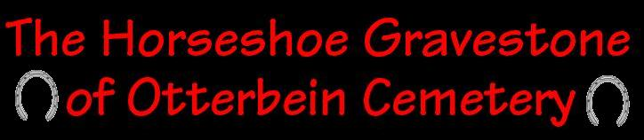
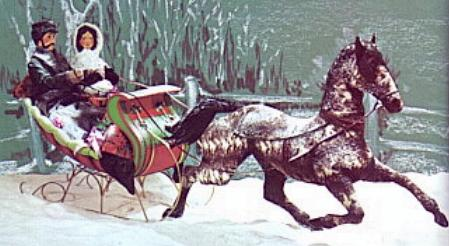
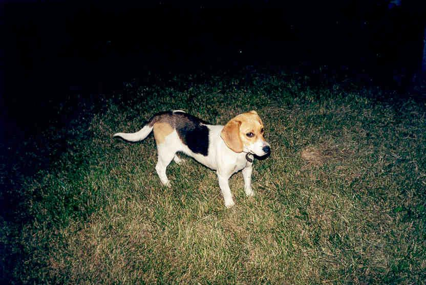
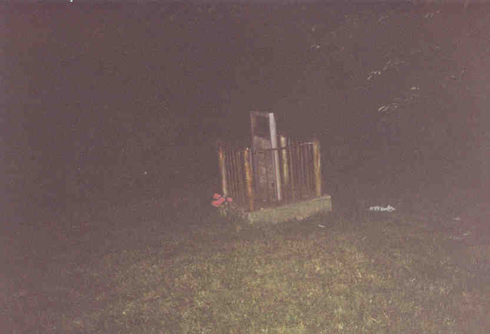
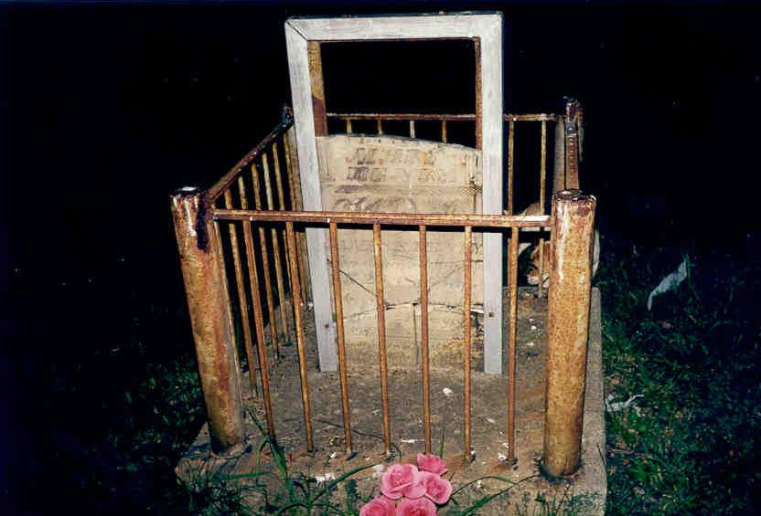
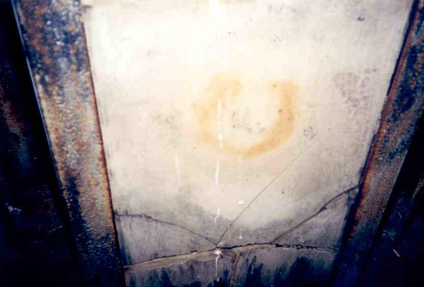

Located just south of Route 22 on Otterbein Road in Perry County is Otterbein Cemetery, home to a locally renowned haunted site: the horseshoe grave. The legend behind it has a narrative quality not often found in minor ghostlore--probably embellished through the process of retelling, but still interesting enough to relate on any late-night trip to see the famous grave.
This is it: James K. Henry had a horse named Bob. He also had two different women who wanted to marry him: Mary Angle and Rachel Hodge. He was out riding one night, trying to decide between the two of them, when he fell asleep and later woke to find that Bob had carried him to Mary's house. Taking it as a sign, he asked her then and there, and she accepted. Rachel was a bridesmaid at the wedding.
The newlyweds rode around in a carriage pulled by Bob, who James had given his wife as a wedding present. Then Mary got pregnant. On February 28, 1845, Mary Angle Henry died in childbirth. The baby was stillborn. James had his wife buried in a corner plot at Otterbein Cemetery.

He waited more than three years, until December 7, 1848, to marry Rachel Hodge. She wore a black dress to the wedding and afterward stood with James at his dead wife's graveside, where an icy winter wind drove them back to their carriage, drawn by Bob the horse.
That was the beginning of the supernatural occurrences at Mary Henry's gravesite. The cemetery's caretaker came knocking a week after the wedding, summoning James and Rachel to see what had happened to her tombstone. A sharply defined horseshoe was emblazoned in the granite. Strange wailings were heard in the cemetery that night, and a blazing ball of light was seen to hover above Mary's plot.
The next morning, James K. Henry went out to the barn to begin his chores for the day. When he didn't return in time, Rachel ran out to the barn to check on him...and found him dead in Bob's stall. The imprint of a horseshoe, identical to the one on his first wife's gravestone, was punched into his forehead.
That's the story. It's also said that even killing her husband wasn't enough for Mary Angle Henry, and that her spirit is still restless at Otterbein Cemetery. Mary and Rachel sometimes appear, fighting and arguing over their long-dead husband. A guy I met told me that he went one night and was chased off by a mysterious blue light which both he and his friend saw. Such things reportedly happen from time to time.

One night in late July of 2000 I visited Otterbein Cemetery with Hoss. It's not hard to find; just look for Otterbein Road, west of Somerset. The graveyard is beside a church.
We parked in the gravel lot beside the church and in front of a small home set off the road. When we got out a beagle dog ran up and greeted us. When we reached out to pet him he flinched, though, which is a pretty good indicator that whatever shithead owns him probably beats him.

The dog went with us over to the cemetery, which slopes down a mild hill and is bordered on two sides by trees and high weeds. It seemed very well taken care of. In the very back corner, where the trees and weeds are, the horseshoe grave stands all by itself.

We started toward it. At this point the dog stopped, spread out, and began barking in the direction of the tombstone. He didn't seem to want to go any further. This was pretty scary for a while, but then we called to him a few times and he followed. He might have been barking at another dog, a few of which we could hear barking off in the distance in people's back yards.

Mary Henry's tombstone has been surrounded with a low metal fence and braced in metal, since people have obviously tried to break it apart for souvenirs. We looked around at the back and found that there is indeed a horseshoe-shaped stain on the tombstone; it looks sort of like somebody placed a horseshoe there, let it rust, and then removed it.

We hung around for a while and tried to speak to the ghost. We called it by name. I even used "in the name of God." But it didn't show itself. No blue light emerged, and there was no sound of horses galloping on Otterbein Road. If the ghost does exist, it doesn't show itself on cue.
It was an interesting thing to see, although I have a sneaking suspicion that the stain on the gravestone came first and the story came later. Have you ever seen the ghost of Mary Henry or her lover? If you have, write to me and let me know about it.
Back
Sources
Gerrick, David J. Ohio's Ghostly Greats. Dayton: Dayton Press, 1982. pp. 49-50.
"The Legend of the Horseshoe Gravestone." Somerset Press 19 Apr. 1973.
Shipley, Tonya and Kathy Thompson. "Skeptic, Believer Visit Area's 'Haunted Places.'" Zanesville Times Recorder, 23 Oct. 2005.